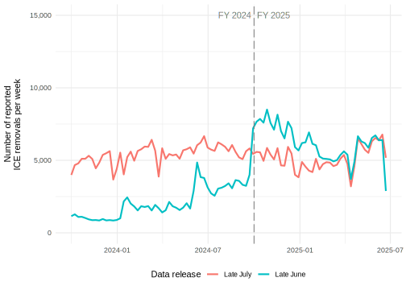

Update on ICE removals data released to the Deportation Data Project
When we posted ICE removals datasets in early June and late June, 2025, we cautioned that those datasets might be incomplete.
After receiving additional explanation from ICE and conducting our own analysis based on that explanation, we now believe that the early June file is in fact complete, and also that the late July removals file—which we had not posted until now—is complete as well. We also confirmed that the late June file is incorrect (partly incomplete and partly overinclusive), and we have removed it from the data page accordingly (although you can still find it for reference).
We now recommend using the late July removals dataset, and have posted it along with the other late July tables.
Our initial concern about the June and July removals files stemmed from two apparently anomalous facts.1 First, there are fewer removals in fiscal year (FY) 2024 in the late June release than in the late July release, suggesting missing removals in the late June release (over 170,000 seem to be missing in FY2024 alone). Second, in FY2025, there are over 40,000 more removals in the late July release than in the late June release.
ICE has now clarified that additional removals in the late July data are correct, but the additional late-June-release removals in FY2025 were actually CBP removals that were mistakenly included. Specifically, the ICE data excludes noncitizens processed for expedited removal or voluntary return but never detained by ICE; the late June release mistakenly included these removals for part of FY2025.2 As for the missing FY2024 removals in the late June file, it’s not clear why these observations were excluded, but the late July figures for FY2024 are almost certainly correct: they roughly match ICE’s 2024 annual report.3 In addition, the flat time trend in the late July data is more plausible than the spiky time trend in the late June data. If removals had more than doubled in October 2024, reporters, lawyers, and others would likely have noticed.
Footnotes
The March 2025 removals dataset, which we never posted, included even fewer removals than any later dataset and was clearly incomplete.↩︎
More specifically, ICE explained:
↩︎ICE’s current methodology for counting ICE Removals was initiated in July of 2023 and applied retroactively to May 12, 2023. This methodology for counting removals includes removals of noncitizens processed for “Expedited Removal” (“ER”) or “Voluntary Return” (“VR”) and who were turned over to ICE’s Enforcement and Removal Operations (“ERO”) for detention. ICE Removals also include “Returns” which includes “Voluntary Returns,” “Voluntary Departures,” and “Withdrawals Under Docket Control.” As of May 12, 2023, noncitizens processed for ER and who were turned over from Customs and Border Patrol (“CBP”) to ICE for removal via ICE Air are also included in ICE Removals. Noncitizens processed for ER and not detained by ERO, or noncitizens processed for VR after June 1, 2013 and who were not detained by ERO, are primarily processed by CBP and not counted as ICE Removals under ICE’s current methodology. CBP should be contacted for those numbers. The “late June” response incorrectly included some CBP removals that should not have been counted as ICE Removals because ICE did not have a hand in removing those noncitizens. The “late July” response corrected the earlier data by only including removals that are counted as ICE Removals under the current methodology for counting ICE Removals.
The 2024 ICE annual report (p. 14) records 271,484 deportations in FY2024; the late July release records 282,214. We are unsure what explains this relatively small discrepancy, but either way, the late July dataset is much more consistent with the annual report than the late June dataset, which records only 109,535 in FY2024.↩︎